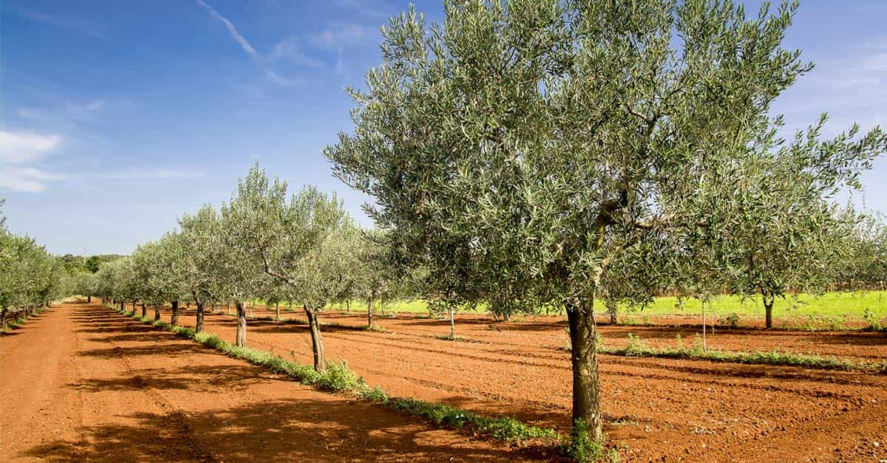

Papa Selo is a Croatian philosopher with an old soul. Aside from tending to his olive trees in the heart of Dalmatia, his singular passion is fjaka (doing absolutely nothing) in his village by the Adriatic sea.


Besides my large, natural masculine bulge, the first few things any girl notices about me are my long eyelashes and smooth beige skin. Sluts these days, right? I almost lament the fact that I typically sow my seed into a woman’s gaping lady garden far before I discover her last name. Unless of course, like my oils, she turns out to be extra virgin. But let’s get back to how olive oil is responsible for how healthy and confident I feel, and how beautiful my body appears to the fairer sex.
Personally, I gulp back at least one heaping tablespoon of extra virgin olive oil twice daily, straight from the bottle. And if I can, straight from the tree. Unfortunately, the vast majority of vegetable and seed oils available in the West are highly processed: they are heated, washed, and treated with a chemical compound called hexane that strips them of most of their nutritional value, all in the name of profit.

Your typical garden-variety vegetable oil, if contaminated, is deprived of the omega-3 fatty acids that make it worthwhile to consume in the first place, leaving only a small quantity of its cousin, omega-6. Though this particular polyunsaturated fat is certainly necessary for the body, when consumed in excess or alone merely amplifies inflammation, and can even increase the risk of heart disease. Few consider that the oils you occasionally drizzle on a Caesar salad at Applebee’s can actually be far worse for you than shooting it straight by the ounce, just like a fine tequila Reposado.
That said, below are seven reasons masculine men everywhere should consider natural extra virgin olive oil as a daily dietary staple.
If you didn’t already know, your testicles produce testosterone by extracting cholesterol from special cells within them called leydig cells. In 2009, a couple of Argentinian researchers discovered that olive oil increases the activity of enzymes responsible for energizing these leydig cells, as well as providing antioxidants to keep them alive for longer. As a result, a positive feedback loop between enzymes and antioxidants in your balls can be strengthened, increasing the rate of testosterone production.
Aside from this, they demonstrated that olive oil acts as an indirect anti-estrogenic. It contains a compound called oleuropein that inhibits enzymes, which would otherwise facilitate the transformation of free testosterone molecules into estrogen. This is clearly not an acceptable outcome for any man. One look around my ancestral village convinces me that without a doubt, the copious amount of olive oil consumed plays a strong role in my cousins’ unparalleled masculinity.

Depression is like having a tail, right? Nothing you can do about it, right? Wrong. Drink olive oil, and a lot of it. A recent study of 12,000 Spanish students linked extra virgin olive oil consumption with a nearly 50% reduction in depression. Another study, conducted also in Spain from 2009, showed a 30% reduction in depression for the experimental group subjected to a Mediterranean diet high in olive oil. The authors opine that somehow cardiovascular disease and depression may be interrelated. Whatever the reason, you can’t beat results like this. Ableism be damned!
There are only two ways that you can be greeted in the selo (the Croatian word for village) after a long absence. Either with “Wow, you sure have gained weight!” followed by a hard slap to the belly and patronizing laughter, or “Wow, you look like a sick, skinny fuck!” in which case you will be fed until your intestines feel like they are about to explode.
Either way, you won’t get an actual compliment. But if you want to feel good about yourself, you know what to do. Yes, apparently extra virgin olive oil speeds up general fat oxidation in the body, meaning it is directly responsible for burning fat. This is perhaps the most simple and consistent result that appears in studies on the subject. Whether it’s cutting season at the gym, or cutting season at the gym, the answer is extra virgin olive oil.
A 2012 study by Ligia Dominguez et al. showed that antioxidants in extra virgin olive oil can both inhibit and sometimes totally reverse age and disease-related learning and memory deficits. Although this research has not been tested in human gastrogenomic trials, I swear my baba (grandmother) never forgets to scold me when I leave the house without my sweater.
At the same time, she also never seems to be forget that a mild draft will not automatically cause my head to violently explode into a million pieces. Olive oil is no modafinil, but I still swear by it. It does too many wonders to not give it the benefit of the doubt here as well.
Given the abnormally high percentage of fats found in olive oil produced in the Mediterranean, most assume that this would exacerbate rather than prevent heart disease by hardening your arteries. Strangely, the lowest incidence of heart disease-related deaths in the industrialized world occurs in Southern Europe, where people typically have high blood cholesterol, high blood pressure, and smoke a lot of cigarettes.
Although there are many possible explanations for why this is the case, the proof is in the eating. One study, which examined 7,447 patients at high cardiovascular risk, showed that after 4.8 years, the risk of major cardiovascular events (heart attack, stroke) was reduced by 30% in the group assigned to the high extra virgin olive oil diet.
Slavs are typically fair-skinned wherever you find them, and while Balkan Slavs closer to the Adriatic have adapted to become darker as they age, they definitely come out kicking and screaming and white as the dickens, just like many of us. A diet high in extra virgin olive oil, however, has been shown to reduce skin cancer risk because of the prevalence of oleic acids, which inhibit certain cancer-causing genes from functioning in cells.
Apparently, only three in every 100,000 residents of countries in the Mediterranean develop any form of skin cancer, despite summer temperatures in most places ranging from 95-115 degrees Fahrenheit. Another Mediterranean paradox resolved by extra virgin olive oil? I think so.
Actually, I do faintly recall my grandmother massaging olive oil onto my back as a child, before I was allowed to play with the other children in my village by the sea. There must be something to that.
Olive oil contains a natural anti-inflammatory agent called oleocanthal. Compared to your run of the mill yellow water from Costco, extra virgin olive oils sourced directly from the Mediterranean are up to 500% more potent. Forget ibuprofen and aspirin, which can cause internal bleeding in the stomach, small intestine and in extreme cases, the brain. If you have a chronic inflammatory condition, it may be worth experimenting with olive oil.
I’m no doctor, but the Monell Chemical Senses Center insists on a spoonful a day to reduce pain associated with allergies, asthma, arthritis, colitis, gastritis, osteoporosis, prostatitis, sinusitis, vaginitis (just kidding), tendonitis, and more. Seriously, just do it. Personally, I take two tablespoons, and always down it with a clove of garlic. No harm done.

Please keep in mind that just like the ideal woman, the only olive oil you should ever consider is extra virgin. Most extra virgin olive oil is fake, so conduct a routine background check just as you would before dating any girl and make sure to source your oils from the highest quality family farms. Italy and Greece tend to produce a lot of fakes, whereas Croatia, Portugal and Lebanon produce authentic liquid gold.
Extra virgin olive olives typically have between 5 and 10 times as much polyphenol content compared to regular oils, and a healthy dose of monounsaturated fats. This is because they are not watered down with Feminism, sunflower seed oil, and other pollutants.
Along with copious amounts of red wine, vine-ripe grapes, bursting pomegranates, organic prosciutto, and plenty of raw garlic and onions, it is no wonder that my living relatives and Slavic ancestors from the Mediterranean are known for their extreme masculinity and virility. Whenever I return to Croatia after an unfortunate extended absence, it becomes painfully obvious to me how much catching up I have to do. As Baba always says “Ih, ranko, ih!” which, when said in the best combination of a Texan and Russian accent you can possibly imagine simply means “Eat, dear, eat!” and lather everything in olive oil.
Read More: 4 Superfoods And Their Effectiveness